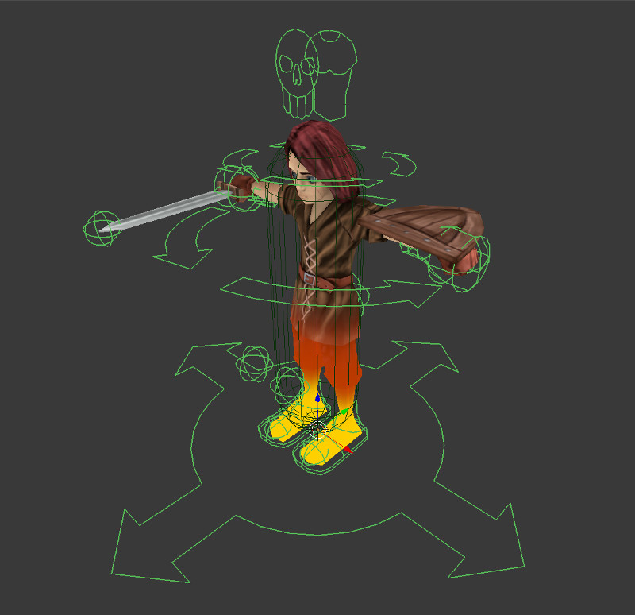
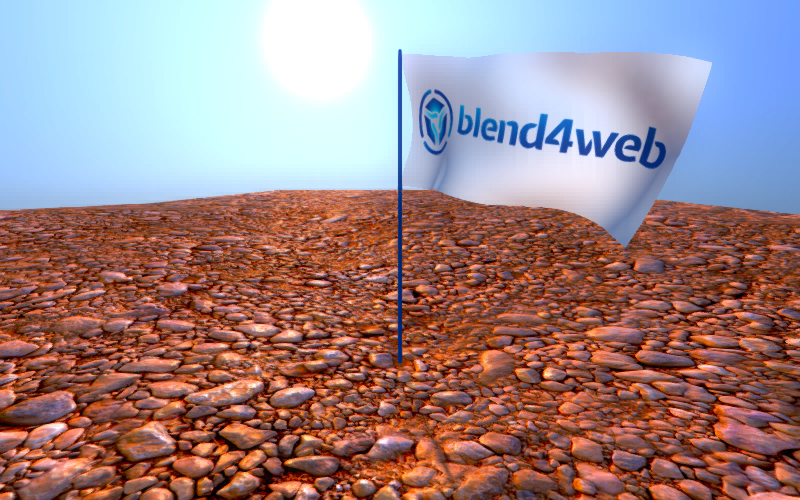

动画¶
一般动画是物体的参数随时间变化。引擎支持以下类型的动画 ︰
物体动画意味着物体作为一个整体变换。
骨骼动画，即使用骨头让物体变形。一个单独的骨骼物体动画也支持 （为父级到骨头）。
顶点动画。物体的变形可以被记录到帧，并在引擎然后重新生成。
音频源参数。扬声器的
音量和音速可以进行动画处理。节点材质的
值节点输出的动画。风弯曲 - 程序性动画。单独在 中描述。
粒子发射。所述在 相应章节.
动画控制¶
有两种方法在引擎中控制动画 ︰
自动，激活
动画面板并在物体的属性中选择行为参数。在这种情况下将由引擎选择相应的动画方法，一个场景加载之后物体的动画就会开始播放。骨骼动画会播放在Action Editor窗口默认赋予物体的那个动作。在应用程序中通过
动画模块的API来工作。
使用 Animation 界面调整动画非常有用。已经放在 相应章节.
物体动画¶
可以进行动画处理的参数是中心坐标 (位置), 旋转 和 缩放.

可以在Blender中为物体添加运动动画关键帧，然后在引擎中重现。
支持以下关键帧类型 ︰
位置
旋转 –
Quaternion(WXYZ)或者XYZ Euler模式是必需的。缩放 — — 要有正确的结果，比例因子在所有 3 轴应该是相同的。
LocRot – 位置 和 旋转 的组合。
LocScale – 位置 和 缩放 的组合。
LocRotScale – 位置 旋转 和 缩放 的组合。
RotScale – 旋转 和 缩放 的组合。
如果网格物体可进行动画，它需要在物体属性选项卡上的 Rendering Propetries 面板激活 Force Dynamic Object 选项。
蒙皮和骨骼动画¶
{kind=link}
骨骼动画同时需要一个网格物体和骨架物体。以下四个步骤应开展︰
在骨架物体中创建该物体的 “骨架” 。
分配好网格物体的顶点组并将它们链接到骨头。这可以由权重绘制完成。
在姿态模式下将骨架物体中骨骼制作动画。可以使用物体动画相同的关键帧类型。
当使用反向动力学 (IK) 或其他非平常的结构时，需要额外的步骤就是烘焙动画 (在Blender中
Action数据块)。可以使用Blend4Web标签下的Bake Skeletal Animation接口执行烘焙 ︰

烘焙参数¶
烘焙需要骨架物体处于选中状态。
将需要烘焙的动作都放到列表里面。如果该列表为空，烘焙所有的动作。
- 名字
在列表中将要烘焙的当前动作名字。
- 优化关键帧
烘焙后优化动画关键帧。引起不正确结果的情况下，建议将此选项关闭。
- 使用Blender的原生烘焙
使用Blender的动画烘焙功能而不是 Blend4Web 的（
Bake Action选项）。Blender动画烘焙设置不同于 Blend4Web 的。- 烘培
执行烘焙。如果过程成功完成，具有 B4W_BAKED_ACTOR_NAME 类型的动作名字会出现在场景。这些动作可以指派给骨架物体并在引擎中播放。把这些动作用在Blender本身是没有任何意义的。
注解
引擎支持每个顶点达 4 个顶点组。如果顶点组数目超过 4 最有影响力的顶点组被选中。当场景加载的顶点权重归一化即它们的总和减少到 1。
要移除骨架不需要的顶点组，请使用按钮 Remove Clean Unused Vertex Groups.
{kind=link}
Blend4Web 才开始对骨架预算进行初步支持。目前，唯一受支持的约束类型是 Copy Transform。它可以用于附加到物体，产生影响，如布娃娃的骨架。后续版本中将进一步添加支持其他类型的约束。
顶点动画¶
{kind=link}
允许记录网格物体任何几何变化。请注意，每个顶点动画帧都是作为一个网格。建议不要用高模网格做长动画，源和导出的文件的大小会非常大，并且还会减慢引擎的工作。
一个特殊的工具用于烘焙顶点动画 - Bake Vertex Animation - 在 Blend4Web 工具面板上。
{kind=link}
默认动画¶
Blend4Web 也有可以自动播放物体动画的选项。要做到这一点，您需要启用要进行动画处理的物体的 Animation 部分的 Apply Default Animation 参数。支持骨骼和物体的动画类型。

Animation starts to play right after the application startup and plays very similar to the Play Timeline node, only without an option to set up the start and end markers (instead, it always starts from the first frame of the timeline and ends with the last). You can also set up animation behavior, like in the Play Animation node.
非线性动画¶
非线性编辑器¶
Blender的非线形编辑让我们方便的设置场景的行为。在它的帮助下，我们可以实现简单的场景。这种方式下简单的场景和应用程序是不用编程的。

引擎支持控制以下实体 ︰
可以用动作表示的任何参数动画
声音播放
粒子发射 （在与全局时间轴连接的形式）
{kind=link}
用法¶
Scene选项卡下的NLA面板激活。在
NLA Editor设置场景所需的行为。选择时间轴面板上的动画时间间隔。
限制条件¶
不支持同一物体不同类型的动画同时播放。
通过 API 控制¶
可以通过 API 方法的 ‘nla.js’ 模块控制非线性动画播放。
// ...
var m_nla = require("nla");
// ...
m_nla.set_frame(150);
// ...
var frame = m_nla.get_frame();
// ...
m_nla.play();
// ...
m_nla.stop();
// ...
请注意，如果 Logic Editor 已经使用用， set_frame, play, stop 方法不可用。
值和 RGB 节点的动画¶
支持节点材质中插入关键帧到 Value and RGB 节点的播放。

注解
其他节点上的数值和颜色值的动画不受支持。
也可以在 非线性动画编辑器 中创建动画轨道。每个材质支持多个 Value 或 RGB 节点动画。这些节点的值可以也通过 API修改，使用 objects 模块的 set_nodemat_value 和 set_nodemat_rgb 方法。
参见